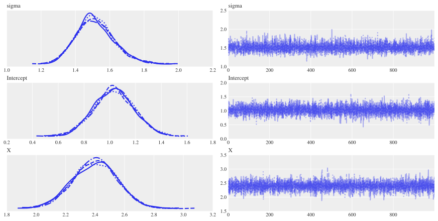
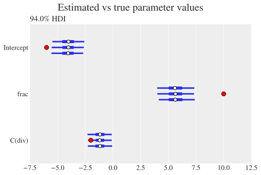
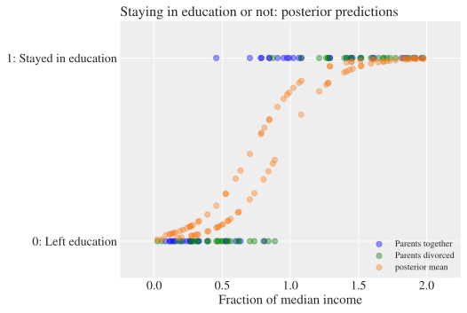

Bayesian Inference Made Easier#
In this chapter, we’ll look at how to perform analysis and regressions using Bayesian techniques using Bambi, which stands for BAyesian Model-Building Interface. Bambi uses the full-fat Bayesian package PyMC under the hood but aims to make doing Bayesian inference much simpler.
If you haven’t yet read Bayesian Inference, you should start there before tackling this chapter.
As in the previous chapter, we’ll be using ArviZ for visualisation of the results from Bayesian inference, a package that builds on Matplotlib. You should follow the install instructions for Bambi carefully and, if you’re confident with using different Python environments, it’s a good idea to spin up a new and dedicated Python environment to try them out in. In case you need a refresher, the Virtual Code Environments covers how to create distinct Python environments.
Here are our initial imports and settings:
import warnings
import arviz as az
import bambi as bmb
import matplotlib.pyplot as plt
import numpy as np
import pandas as pd
# Plot settings
plt.style.use(
"https://github.com/aeturrell/coding-for-economists/raw/main/plot_style.txt"
)
az.style.use("arviz-darkgrid")
# Pandas: Set max rows displayed for readability
pd.set_option("display.max_rows", 23)
# Set seed for random numbers
seed_for_prng = 78557
prng = np.random.default_rng(
seed_for_prng
) # prng=probabilistic random number generator
# Turn off warnings
warnings.filterwarnings("ignore")
Bayesian Models via Formulae with Bambi#
Packages like PyMC give you a lot of flexibility, but you do have to think about what to specify for priors and model setup, even for quite simple and standard Bayesian models. Bambi, BAyesian Model-Building Interface, provides a more user friendly and high level model-building interface that builds on PyMC and is designed to make it easy to fit Bayesian mixed-effects models. Most notably, it comes with a formulae API that allows you to specify your model with a string describing a formula (like statsmodels for conventional regression).
Let’s see how to specify the model we did in Bayesian Inference only using Bambi. As a reminder, the model was
where
First, though, we need to put the data from the first example in the previous chapter into a dataframe.
# True parameter values
alpha_true, beta_true, sigma_true = 1, 2.5, 1.5
# Size of dataset
size = 100
num_samples = 1000
num_chains = 2
# Predictor variable: random sample
X = prng.standard_normal(size)
# Simulate outcome variable
Y = alpha_true + beta_true * X + prng.standard_normal(size) * sigma_true
df_bambi = pd.DataFrame({"X": X, "Y": Y})
# Initialise the model; use "-1" at the end to suppress the constant term
model = bmb.Model("Y ~ X", df_bambi)
# Fit the model using 1000 on each of 4 chains
results = model.fit(draws=1000, chains=4)
Initializing NUTS using jitter+adapt_diag...
Multiprocess sampling (4 chains in 2 jobs)
NUTS: [sigma, Intercept, X]
Sampling 4 chains for 1_000 tune and 1_000 draw iterations (4_000 + 4_000 draws total) took 3 seconds.
# Use ArviZ to plot the results
az.plot_trace(results)
# Key summary and diagnostic info on the model parameters
az.summary(results, round_to=2)
| mean | sd | hdi_3% | hdi_97% | mcse_mean | mcse_sd | ess_bulk | ess_tail | r_hat | |
|---|---|---|---|---|---|---|---|---|---|
| sigma | 1.51 | 0.11 | 1.31 | 1.72 | 0.0 | 0.0 | 5957.30 | 2894.30 | 1.0 |
| Intercept | 1.03 | 0.15 | 0.73 | 1.31 | 0.0 | 0.0 | 6113.77 | 2956.31 | 1.0 |
| X | 2.40 | 0.15 | 2.12 | 2.68 | 0.0 | 0.0 | 5991.38 | 2492.10 | 1.0 |

This was a a lot easier to run, and it found much the same results! Note that the same set of variables as we saw in the first example are just appearing with different names here—the true values are an intercept of 1, a coefficient on \(X\) of 2.5, and a standard deviation of 1.5 (the variable Y_sigma) above. We didn’t even have to specify priors; Bambi chose these for us. Let’s see exactly what it did by looking at the model variable:
model
Formula: Y ~ X
Family: gaussian
Link: mu = identity
Observations: 100
Priors:
target = mu
Common-level effects
Intercept ~ Normal(mu: 1.3457, sigma: 7.1081)
X ~ Normal(mu: 0.0, sigma: 7.063)
Auxiliary parameters
sigma ~ HalfStudentT(nu: 4.0, sigma: 2.8189)
------
* To see a plot of the priors call the .plot_priors() method.
* To see a summary or plot of the posterior pass the object returned by .fit() to az.summary() or az.plot_trace()
You can see from this description that Bambi went for slightly more tight priors than we did, and opted for the (very popular) half-Student T distribution for the standard deviation
\(\text{Intercept} \thicksim \mathcal{N}(1.3, 7.1)\)
\(X \thicksim \mathcal{N}(0, 7)\)
\(\sigma \thicksim \mathcal{t_{+}}(4.0, 2.8)\) (the half-Student-t distribution)
where the half-Student-t distribution is
Bambi will try to choose sensible priors for you.
Fixed Effects in Bambi#
Models with fixed effects are also easy to implement. When a categorical common effect with \(N\) levels is added to a model, by default, it is coded by \(N-1\) dummy variables (i.e., reduced-rank coding). To explicitly remove the intercept, add “-1” to the formula string—just like with frequentist regression in statsmodels.
Bambi will recognise when a variable is of categorical or Boolean type. But, as the Zen of Python says, explicit is better than implicit; we should also specify that a variable is categorical or boolean (a fixed effect) directly in the formula. This is done, just as in statsmodels, by enclosing the variable in a “C(…)”, for “category”. So we’ll add "C(D)" to the model formula specification.
Let’s revisit the example from earlier but implement it directly in Bambi and remove the intercept.
# True parameter values
α_true, β_true, σ_true, γ_true = 1, 2.5, 1.5, 6
# Size of dataset
size = 200
num_samples = 1000
num_chains = 4
# Predictor variables
X_cat = prng.standard_normal(size)
D = prng.binomial(1, 0.4, size) # This chooses 1 or 0 with 0.4 prob for 1
# Simulate outcome variable
Y_cat = α_true + β_true * X_cat + γ_true * D + prng.standard_normal(size) * σ_true
And now let’s specify the model
df_bambi_cat = pd.DataFrame({"X": X_cat, "Y": Y_cat, "D": D})
df_bambi_cat["D"] = df_bambi_cat["D"].astype("category")
model_cat = bmb.Model("Y ~ X + C(D)", data=df_bambi_cat)
model_cat
Formula: Y ~ X + C(D)
Family: gaussian
Link: mu = identity
Observations: 200
Priors:
target = mu
Common-level effects
Intercept ~ Normal(mu: 3.0002, sigma: 13.1506)
X ~ Normal(mu: 0.0, sigma: 10.0156)
C(D) ~ Normal(mu: 0.0, sigma: 20.3465)
Auxiliary parameters
sigma ~ HalfStudentT(nu: 4.0, sigma: 4.0101)
Again, Bambi has made slightly different choices but ones that seem reasonable. Let’s fit the model and look at the estimated values.
# Fit the model using 1000 on each of 4 chains
results_cat = model_cat.fit(draws=1000, chains=4)
Initializing NUTS using jitter+adapt_diag...
Multiprocess sampling (4 chains in 2 jobs)
NUTS: [sigma, Intercept, X, C(D)]
Sampling 4 chains for 1_000 tune and 1_000 draw iterations (4_000 + 4_000 draws total) took 3 seconds.
az.summary(results_cat)
| mean | sd | hdi_3% | hdi_97% | mcse_mean | mcse_sd | ess_bulk | ess_tail | r_hat | |
|---|---|---|---|---|---|---|---|---|---|
| sigma | 1.405 | 0.071 | 1.267 | 1.535 | 0.001 | 0.001 | 5707.0 | 3118.0 | 1.0 |
| Intercept | 0.768 | 0.130 | 0.505 | 0.995 | 0.002 | 0.001 | 5907.0 | 2941.0 | 1.0 |
| X | 2.449 | 0.102 | 2.267 | 2.642 | 0.001 | 0.001 | 6512.0 | 3404.0 | 1.0 |
| C(D)[1] | 6.000 | 0.200 | 5.649 | 6.406 | 0.002 | 0.002 | 6572.0 | 3334.0 | 1.0 |
This is very similar to the estimate using the longer way of describing a model using PyMC alone.
Specifying Priors in Bambi#
Using Bambi, we didn’t specify the prior at all—it chose for us. So how do we modify or specify a prior should we need to?
You can always specify priors from the full PyMC selection should you need them. The first way is to more vaguely specify them in the form of a dictionary mapping variable names to types, for example
prior = {"condition":"superwide"}
which scales the priors of the distribution by 0.8 (the default is "wide", which has a scale of \(\sqrt{1/3}\)). But we can also specify full priors. Let’s change the prior in this model to demonstrate.
from bambi import Prior
prior = {"D": Prior("Normal", mu=0.5, sigma=10)}
model_cat = bmb.Model("Y ~ X + C(D)", data=df_bambi_cat, priors=prior)
results_cat = model_cat.fit(draws=1000, chains=4)
az.summary(results_cat, round_to=2)
Initializing NUTS using jitter+adapt_diag...
Multiprocess sampling (4 chains in 2 jobs)
NUTS: [sigma, Intercept, X, C(D)]
Sampling 4 chains for 1_000 tune and 1_000 draw iterations (4_000 + 4_000 draws total) took 3 seconds.
| mean | sd | hdi_3% | hdi_97% | mcse_mean | mcse_sd | ess_bulk | ess_tail | r_hat | |
|---|---|---|---|---|---|---|---|---|---|
| sigma | 1.40 | 0.07 | 1.27 | 1.53 | 0.0 | 0.0 | 6151.16 | 3068.61 | 1.0 |
| Intercept | 0.77 | 0.13 | 0.54 | 1.01 | 0.0 | 0.0 | 6208.06 | 3581.29 | 1.0 |
| X | 2.44 | 0.10 | 2.27 | 2.63 | 0.0 | 0.0 | 6095.88 | 3113.19 | 1.0 |
| C(D)[1] | 5.99 | 0.20 | 5.65 | 6.39 | 0.0 | 0.0 | 5422.85 | 2934.69 | 1.0 |
Mixed Effects Models in Bambi#
This section is indebted to an example in the Bambi documentation.
We are going to demonstrate how to perform a random and fixed effects analysis making use of a replication of a study by Strack, Martin & Stepper (1988). The original Strack et al. study tested a facial feedback hypothesis arguing that emotional responses are, in part, driven by facial expressions (rather than expressions always following from emotions). Strack and colleagues reported that participants rated cartoons as more funny when the participants held a pen in their teeth (inducing a smile) than when they held a pen between their lips (inducing a pout). This outcome variable is recorded as "value" in the data. The article has been cited over 1,400 times, and has been influential in popularising the view that affective experiences and outward expressions of affective experiences can both influence each other (instead of the relationship being a one-way street from experience to expression). In 2016, a Registered Replication Report (RRR) led by Wagenmakers and colleagues attempted to replicate Study 1 from Strack, Martin, & Stepper (1988) in 17 independent experiments comprising over 2,500 participants.
Here we use the Bambi model-building interface to quickly re-analyse the RRR data using a Bayesian approach and making use of random effects and fixed effects.
Let’s pull down the data:
df_rrr = pd.read_csv(
"https://github.com/bambinos/bambi/raw/main/docs/notebooks/data/rrr_long.csv"
)
df_rrr.head()
| uid | condition | gender | age | study | self_perf | stimulus | value | |
|---|---|---|---|---|---|---|---|---|
| 0 | 1.0 | 0.0 | 1.0 | 24.0 | 0.0 | 8.0 | rating_c1 | 3.0 |
| 1 | 2.0 | 1.0 | 0.0 | 27.0 | 0.0 | 9.0 | rating_c1 | 7.0 |
| 2 | 3.0 | 0.0 | 1.0 | 25.0 | 0.0 | 3.0 | rating_c1 | 5.0 |
| 3 | 5.0 | 0.0 | 1.0 | 20.0 | 0.0 | 3.0 | rating_c1 | 7.0 |
| 4 | 8.0 | 1.0 | 1.0 | 19.0 | 0.0 | 6.0 | rating_c1 | 6.0 |
"value" represents the rating of the cartoon, while "condition" is an indicator of whether the participant was made to smile or not. "uid" is a unique identifier for each individual. We’ll also introduce controls for gender and age, and drop any invalid values.
Now, a purely fixed effects model for this would look like
bmb.Model("value ~ condition + age + gender", df_rrr, dropna=True)
Automatically removing 33/6940 rows from the dataset.
Formula: value ~ condition + age + gender
Family: gaussian
Link: mu = identity
Observations: 6907
Priors:
target = mu
Common-level effects
Intercept ~ Normal(mu: 4.5457, sigma: 28.4114)
condition ~ Normal(mu: 0.0, sigma: 12.0966)
age ~ Normal(mu: 0.0, sigma: 1.3011)
gender ~ Normal(mu: 0.0, sigma: 13.1286)
Auxiliary parameters
sigma ~ HalfStudentT(nu: 4.0, sigma: 2.4186)
Note that an intercept was automatically added.
This model has steam-rollered through some potentially useful information. For example, there is a variable "study" that captures which study the subject’s experiment was performed in. It takes one of 17 values. While we might expect that subjects responses will have the same pattern of effect sizes, it’s reasonable to think some features of different studies might vary.
To capture some of the variation, we can add a random effect to the model. We’ll add intercept deviations for each study. What we’re saying here is that we’ll allow the intercept to be different for each study, as long the values are drawn from a distribution. Let \(i\) represent an individual and \(j\) a study. The model is
where \(W_j\) is a random effect intercept. Here’s how to specify it in Bambi; we use the notation "(1|study)" to declare that there should be a constant offset for each study drawn from a distribution.
# Fixed effects and group specific (or random) intercepts for study
model_rrr = bmb.Model(
"value ~ condition + age + gender + (1|study)", df_rrr, dropna=True
)
model_rrr
Automatically removing 33/6940 rows from the dataset.
Formula: value ~ condition + age + gender + (1|study)
Family: gaussian
Link: mu = identity
Observations: 6907
Priors:
target = mu
Common-level effects
Intercept ~ Normal(mu: 4.5457, sigma: 28.4114)
condition ~ Normal(mu: 0.0, sigma: 12.0966)
age ~ Normal(mu: 0.0, sigma: 1.3011)
gender ~ Normal(mu: 0.0, sigma: 13.1286)
Group-level effects
1|study ~ Normal(mu: 0.0, sigma: HalfNormal(sigma: 28.4114))
Auxiliary parameters
sigma ~ HalfStudentT(nu: 4.0, sigma: 2.4186)
Bambi has chosen to draw the study-level intercepts from a normal distribution, with a prior on the standard deviation of that normal that is itself a half-normal distribution.
results_rrr = model_rrr.fit(draws=1000, chains=2)
Initializing NUTS using jitter+adapt_diag...
Multiprocess sampling (2 chains in 2 jobs)
NUTS: [sigma, Intercept, condition, age, gender, 1|study_sigma, 1|study_offset]
Sampling 2 chains for 1_000 tune and 1_000 draw iterations (2_000 + 2_000 draws total) took 10 seconds.
We recommend running at least 4 chains for robust computation of convergence diagnostics
az.plot_trace(results_rrr, compact=True);

We’ve seen much of the above before, but the posterior that looks a bit different is the one for the intercept based on the study. We see here that it is not one parameter, but 17 deviations, plus a mean that the deviations are relative to, plus a standard deviation. We can see the estimates in the normal way, using az.summary.
az.summary(results_rrr, round_to=2)
| mean | sd | hdi_3% | hdi_97% | mcse_mean | mcse_sd | ess_bulk | ess_tail | r_hat | |
|---|---|---|---|---|---|---|---|---|---|
| sigma | 2.39 | 0.02 | 2.35 | 2.43 | 0.00 | 0.0 | 1838.27 | 1352.82 | 1.01 |
| Intercept | 3.64 | 0.18 | 3.33 | 3.98 | 0.01 | 0.0 | 762.85 | 1392.47 | 1.00 |
| condition | -0.02 | 0.06 | -0.12 | 0.09 | 0.00 | 0.0 | 1952.65 | 1485.87 | 1.00 |
| age | 0.05 | 0.01 | 0.03 | 0.06 | 0.00 | 0.0 | 1959.06 | 1305.12 | 1.00 |
| gender | -0.10 | 0.06 | -0.22 | 0.01 | 0.00 | 0.0 | 1710.55 | 1376.64 | 1.00 |
| 1|study_sigma | 0.41 | 0.08 | 0.26 | 0.57 | 0.00 | 0.0 | 499.37 | 618.15 | 1.00 |
| 1|study[0.0] | 0.19 | 0.15 | -0.08 | 0.47 | 0.01 | 0.0 | 605.20 | 949.79 | 1.00 |
| 1|study[1.0] | -0.38 | 0.15 | -0.65 | -0.09 | 0.01 | 0.0 | 596.84 | 1013.42 | 1.00 |
| 1|study[2.0] | 0.02 | 0.15 | -0.26 | 0.30 | 0.01 | 0.0 | 660.39 | 1083.17 | 1.00 |
| 1|study[3.0] | -0.56 | 0.16 | -0.87 | -0.28 | 0.01 | 0.0 | 749.97 | 1334.36 | 1.00 |
| 1|study[4.0] | 0.27 | 0.15 | -0.01 | 0.57 | 0.01 | 0.0 | 518.05 | 955.55 | 1.00 |
| 1|study[5.0] | -0.18 | 0.15 | -0.47 | 0.10 | 0.01 | 0.0 | 684.69 | 1172.52 | 1.01 |
| 1|study[6.0] | -0.56 | 0.16 | -0.87 | -0.29 | 0.01 | 0.0 | 637.64 | 1122.39 | 1.00 |
| 1|study[7.0] | 0.13 | 0.16 | -0.17 | 0.42 | 0.01 | 0.0 | 852.03 | 1149.39 | 1.00 |
| 1|study[8.0] | -0.60 | 0.15 | -0.84 | -0.28 | 0.01 | 0.0 | 659.75 | 1131.85 | 1.00 |
| 1|study[9.0] | 0.26 | 0.15 | -0.03 | 0.55 | 0.01 | 0.0 | 657.59 | 1143.57 | 1.00 |
| 1|study[10.0] | 0.15 | 0.15 | -0.13 | 0.42 | 0.01 | 0.0 | 588.13 | 1171.60 | 1.00 |
| 1|study[11.0] | 0.32 | 0.15 | 0.03 | 0.60 | 0.01 | 0.0 | 691.72 | 1231.94 | 1.00 |
| 1|study[12.0] | -0.02 | 0.15 | -0.32 | 0.26 | 0.01 | 0.0 | 645.03 | 912.81 | 1.00 |
| 1|study[13.0] | 0.31 | 0.15 | 0.03 | 0.59 | 0.01 | 0.0 | 694.63 | 985.02 | 1.01 |
| 1|study[14.0] | -0.34 | 0.14 | -0.60 | -0.06 | 0.01 | 0.0 | 652.17 | 1119.91 | 1.00 |
| 1|study[15.0] | 0.39 | 0.15 | 0.11 | 0.68 | 0.01 | 0.0 | 612.80 | 1262.29 | 1.01 |
| 1|study[16.0] | 0.46 | 0.17 | 0.15 | 0.77 | 0.01 | 0.0 | 727.63 | 1147.43 | 1.00 |
Of course, this isn’t the only way we can add random effects. As well as study-specific intercepts, we can add study-specific slopes to the model. That is, we’ll assume that the subjects at each research site have a different baseline appreciation of the cartoons (some find the cartoons funnier than others), and that the effect of condition also varies across sites. The equation for this model is
where \(\delta_{j}\) is an intercept that depends on the study, and \(\alpha_{j}\) is a slope that depends on the study. Let’s run this model using the syntax "(condition|study)" to apply the slope and intercept based on the study random effect. If we wanted slopes specific to each study without including a study specific intercept, we would write "value ~ condition + age + gender + (0 + condition | study)" instead.
# Fixed effects and group specific (or random) intercepts & slopes for study
model_slope = bmb.Model(
"value ~ condition + age + gender + (condition|study)", df_rrr, dropna=True
)
model_slope
Automatically removing 33/6940 rows from the dataset.
Formula: value ~ condition + age + gender + (condition|study)
Family: gaussian
Link: mu = identity
Observations: 6907
Priors:
target = mu
Common-level effects
Intercept ~ Normal(mu: 4.5457, sigma: 28.4114)
condition ~ Normal(mu: 0.0, sigma: 12.0966)
age ~ Normal(mu: 0.0, sigma: 1.3011)
gender ~ Normal(mu: 0.0, sigma: 13.1286)
Group-level effects
1|study ~ Normal(mu: 0.0, sigma: HalfNormal(sigma: 28.4114))
condition|study ~ Normal(mu: 0.0, sigma: HalfNormal(sigma: 12.0966))
Auxiliary parameters
sigma ~ HalfStudentT(nu: 4.0, sigma: 2.4186)
Let’s take a look at the diagram of the model, with the results
results_slope = model_slope.fit(draws=2000, chains=2, target_accept=0.99)
Initializing NUTS using jitter+adapt_diag...
Multiprocess sampling (2 chains in 2 jobs)
NUTS: [sigma, Intercept, condition, age, gender, 1|study_sigma, 1|study_offset, condition|study_sigma, condition|study_offset]
Sampling 2 chains for 1_000 tune and 2_000 draw iterations (2_000 + 4_000 draws total) took 61 seconds.
We recommend running at least 4 chains for robust computation of convergence diagnostics
Let’s have a look at the extra variables we introduced through this one change:
az.plot_trace(
results_slope,
var_names=["condition|study_sigma", "condition|study", "1|study", "1|study_sigma"],
);

Now, as well as having study specific intercepts, we have a slope that characterises how the effect of condition on value varies by study.
We can look at the posterior of condition more closely to determine whether it does affect how funny the study participants found cartoons—and now we’re taking lots of extra variation into account. We can also compare the size of this coefficient against other variables in the model to get a rough idea of how substantial this effect is. We’ll use the plot_forest function to do this:
az.plot_forest(
results_slope,
var_names=["Intercept", "condition", "age", "gender"],
figsize=(8, 2),
);
So we see at best a weak relationship between the condition of a subject and the value they give, and the coefficient’s range includes 0. While this model is just meant to be an example (not a proper analysis), the conclusion you might draw from the above is that the results of the original study don’t replicate, and there is no effect.
This was just a short tour of what can be achieved using formulae in Bambi. Check out the documentation for more.
Bayesian Generalised Linear Models#
Just as we can perform a wider variety of regressions using frequentist maximum likelihood methods, for example logit (aka following Fermi-Dirac statistics), probit, and poission models, so too can we perform these regressions using Bayesian methods.
Let’s see an example of how to perform a logistic regression using some synthetic data. We’re going to examine the propensity of students to stay in education at 18 years of age as a binary outcome (0 for leaving education and 1 for staying in it) and see how it is predicted by a measure of parental income as a fraction of the median income, frac. We’ll also use a fixed effect for whether their parents are divorced or not (1 or 0 respectively), called div. We’ll create our own synthetic data to illustrate the problem.
The model we’ll use is a logit, assuming that the data generating process goes like this:
where \(p\) is probability of staying in education and \(\sigma\) is the “link function” that translates variables and coefficients into a probability. \(\ln( p/(1-p))\) is called the log-odds as it is the log of the odds ratio. The odds ratio is the ratio of the probability, \(p\), to the complement of the probability, \(1-p\). Note that this model implies that the log-odds ratio is modelled by a standard linear regression. These definitions also imply that the link function is
While \(p\in[0, 1]\), \(\sigma^{-1}(p) \in (-\infty, \infty)\) so this link function maps the real number line into the interval zero to one.
Of course, we’re actually dealing with a binary variable here—outcomes can be 0 or 1, and nothing inbetween, so there’s one more piece of the puzzle. Conditional on confounders, i.e. given the value of \(p\), the chance of the outcome variable \(y\) being 0 or 1 is \(p\). In other words, \(P(Y=1|y) = p\), which is the definition of the probability mass function of the Bernoulli distribution. Taking that approach over all outcomes \(y\), we can say that
Let’s generate some synthetic data with these properties; first we set the true values of the data generating process.
beta_true = 10
gamma_true = -2
alpha_true = -6
And now let’s generate some synthetic data. We’ll just grab random numbers uniformly between 0 and 2x median income, and assume that there is equal chance of parents being divorced or not (ie a balanced class).
nobs = 100
df_sch = pd.DataFrame(
{"frac": prng.uniform(0, 2, nobs), "div": prng.integers(0, 2, size=nobs)}
)
beta_dot_x = df_sch["frac"] * beta_true + df_sch["div"] * gamma_true + alpha_true
p_vec = 1 / (1 + np.exp(-(beta_dot_x)))
# Now sample from Bernoulli (binomial with n=1)
y_vec = prng.binomial(1, p=p_vec, size=nobs)
df_sch["stay"] = y_vec
df_sch.sample(5, random_state=seed_for_prng)
| frac | div | stay | |
|---|---|---|---|
| 55 | 0.321323 | 0 | 0 |
| 83 | 0.211424 | 0 | 0 |
| 35 | 0.561600 | 1 | 0 |
| 34 | 1.063366 | 0 | 1 |
| 7 | 0.504482 | 1 | 0 |
Now we’ll perform Bayesian inference on the model we’ve constructed. We could write this model out in full using PyMC, but that’s quite long-winded and Bambi offers an easier syntax to do it via a formulae specification. The only addition to what we’ve seen already is that we’re going to specify the family of link functions. There are plenty available, but in this case we’ll want the “Bernoulli” family because we’re dealing with a single 0 or 1 outcome.
Let’s specify and fit the model:
model_logit = bmb.Model("stay ~ frac + C(div)", df_sch, family="bernoulli")
model_logit
Formula: stay ~ frac + C(div)
Family: bernoulli
Link: p = logit
Observations: 100
Priors:
target = p
Common-level effects
Intercept ~ Normal(mu: 0.0, sigma: 1.5)
frac ~ Normal(mu: 0.0, sigma: 1.6464)
C(div) ~ Normal(mu: 0.0, sigma: 1.0)
results_logit = model_logit.fit(draws=3000, chains=3)
Modeling the probability that stay==1
Initializing NUTS using jitter+adapt_diag...
Multiprocess sampling (3 chains in 2 jobs)
NUTS: [Intercept, frac, C(div)]
Sampling 3 chains for 1_000 tune and 3_000 draw iterations (3_000 + 9_000 draws total) took 5 seconds.
We recommend running at least 4 chains for robust computation of convergence diagnostics
In this case, we know the true values, so we’ll create a chart of the coefficients and the highest density interval around them alongside the true values. We’ll use ArviZ’s plot_forest() function for this.
fig, ax = plt.subplots()
az.plot_forest(results_logit, ax=ax)
for i, val in enumerate([gamma_true, beta_true, alpha_true]):
ax.scatter(val, ax.get_yticks()[i], s=75, color="red", zorder=5, edgecolors="k")
plt.suptitle("Estimated vs true parameter values")
plt.show()

It would be nice to see some example samples from the posterior alongside the original data, to check that the model produces sensible results. For this, we can use the predict function. Rather than predicting the entire density range, we’ll just predict some means here (kind="mean") and put them into a separate variable (via inplace=False).
idata_mean = model_logit.predict(results_logit, kind="mean", inplace=False)
idata_mean
-
<xarray.Dataset> Size: 7MB Dimensions: (chain: 3, draw: 3000, C(div)_dim: 1, __obs__: 100) Coordinates: * chain (chain) int64 24B 0 1 2 * draw (draw) int64 24kB 0 1 2 3 4 5 ... 2994 2995 2996 2997 2998 2999 * C(div)_dim (C(div)_dim) <U1 4B '1' * __obs__ (__obs__) int64 800B 0 1 2 3 4 5 6 7 ... 92 93 94 95 96 97 98 99 Data variables: Intercept (chain, draw) float64 72kB -2.714 -2.714 -5.18 ... -3.672 -3.326 frac (chain, draw) float64 72kB 4.45 4.45 6.747 ... 5.401 5.427 5.219 C(div) (chain, draw, C(div)_dim) float64 72kB -1.429 -1.429 ... -1.169 p (chain, draw, __obs__) float64 7MB 0.9824 0.8446 ... 0.2171 Attributes: created_at: 2025-01-03T01:01:49.583801+00:00 arviz_version: 0.20.0 inference_library: pymc inference_library_version: 5.19.1 sampling_time: 4.598562002182007 tuning_steps: 1000 modeling_interface: bambi modeling_interface_version: 0.15.0 -
<xarray.Dataset> Size: 1MB Dimensions: (chain: 3, draw: 3000) Coordinates: * chain (chain) int64 24B 0 1 2 * draw (draw) int64 24kB 0 1 2 3 4 ... 2996 2997 2998 2999 Data variables: (12/17) diverging (chain, draw) bool 9kB False False ... False False reached_max_treedepth (chain, draw) bool 9kB False False ... False False largest_eigval (chain, draw) float64 72kB nan nan nan ... nan nan lp (chain, draw) float64 72kB -26.6 -26.6 ... -25.91 perf_counter_diff (chain, draw) float64 72kB 0.0003734 ... 0.0003033 perf_counter_start (chain, draw) float64 72kB 411.5 411.5 ... 415.2 ... ... smallest_eigval (chain, draw) float64 72kB nan nan nan ... nan nan acceptance_rate (chain, draw) float64 72kB 1.0 0.1773 ... 0.9287 step_size (chain, draw) float64 72kB 1.344 1.344 ... 1.146 energy_error (chain, draw) float64 72kB -0.5456 0.0 ... 0.1842 max_energy_error (chain, draw) float64 72kB -0.5456 2.326 ... 0.1842 step_size_bar (chain, draw) float64 72kB 0.936 0.936 ... 0.8897 Attributes: created_at: 2025-01-03T01:01:49.604544+00:00 arviz_version: 0.20.0 inference_library: pymc inference_library_version: 5.19.1 sampling_time: 4.598562002182007 tuning_steps: 1000 modeling_interface: bambi modeling_interface_version: 0.15.0 -
<xarray.Dataset> Size: 2kB Dimensions: (__obs__: 100) Coordinates: * __obs__ (__obs__) int64 800B 0 1 2 3 4 5 6 7 8 ... 92 93 94 95 96 97 98 99 Data variables: stay (__obs__) int64 800B 1 1 0 0 0 1 1 0 1 1 1 ... 1 1 0 1 0 1 1 0 0 0 Attributes: created_at: 2025-01-03T01:01:49.609606+00:00 arviz_version: 0.20.0 inference_library: pymc inference_library_version: 5.19.1 modeling_interface: bambi modeling_interface_version: 0.15.0
Armed with predictions of the posterior distribution, we can now chart the original data alongside the model predictions. In the plot below, you’ll notice that the predictions seem to lie along two separate lines. Do you know why?
dot_transp = 0.4
dot_size = 40
fig, ax = plt.subplots()
ax.scatter(
df_sch.loc[df_sch["div"] == 0, "frac"],
df_sch.loc[df_sch["div"] == 0, "stay"],
color="blue",
alpha=dot_transp,
label="Parents together",
s=dot_size,
)
ax.scatter(
df_sch.loc[df_sch["div"] == 1, "frac"],
df_sch.loc[df_sch["div"] == 1, "stay"],
color="green",
alpha=dot_transp,
label="Parents divorced",
s=dot_size,
)
ax.scatter(
df_sch["frac"],
idata_mean.posterior["p"].mean(axis=0).mean(axis=0),
label="posterior mean",
color="C1",
alpha=dot_transp,
s=dot_size,
)
ax.set_xlabel("Fraction of median income")
ax.set_title("Staying in education or not: posterior predictions")
ax.set_yticks([0, 1])
ax.set_yticklabels(["0: Left education", "1: Stayed in education"])
ax.legend(fontsize=10, loc="lower right")
ax.set_xlim(-0.25, 2.25)
plt.show()

In addition to logit models, PyMC and Bambi both support a wide range of other generalised linear models.